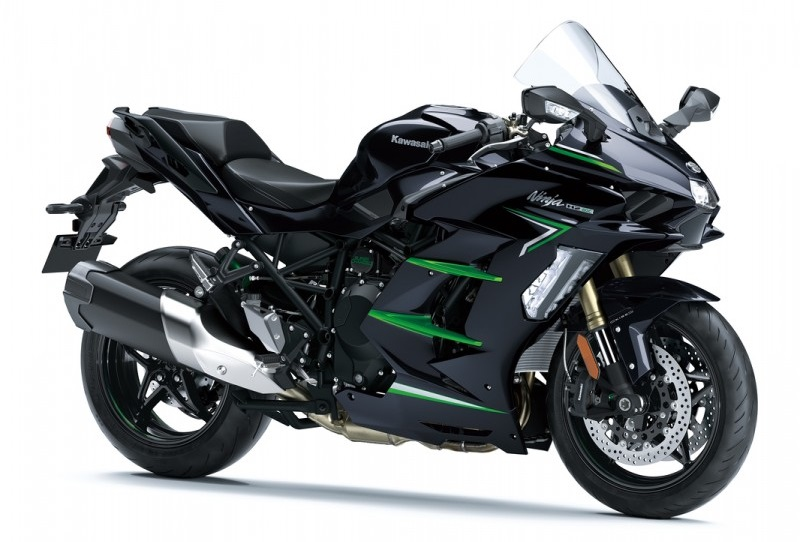

Kawasaki H2 SX

Новий Kawasaki Ninja H2 SX – це найдосконаліший спорт-турист від Kawasaki з максимальною
інтеграцією високих технологій, продуктивності та комфорту. Новий особливий функціонал,
що надається системою ARAS, включає адаптивний круїз-контроль та функцію моніторингу сліпих
зон, а в нову панель приладів з 6,5” TFT-дисплеєм інтегрована інформаційно-розважальна
система SPIN. Все це дозволяє зазнати максимального захоплення від керування мотоциклом
з унікальним збалансованим двигуном з нагнітачем як у подорожах, так і у повсякденній експлуатації.
Найкраща технологія - та, яка стає природним продовженням нас і допомагає почуватися вільним.
Ninja H2 SX СТВОРЕНИЙ ДЛЯ СВОБОДИ.
Вітрозахист та аеродинаміка:
Завдяки великому вітровому склу та повноцінному обтічнику Ninja H2 SX надійно захищає мотоцикліста
від вітру та підвищує комфорт у тривалих поїздках. Аеродинамічна форма обтічника не тільки створює
спортивний образ, а й забезпечує перевагу на високій швидкості.
Адаптивні вогні:
Світлодіодні адаптивні вогні, вбудовані в бічні обтічники та активовані при нахилі мотоцикла,
покращують освітлення дороги під час повороту.
Збалансований двигун з нагнітачем:
Збалансований двигун з нагнітачем з високою економічністю палива видає 200 к.с. максимальну
потужність. Налаштування двигуна, орієнтовані на діапазон низьких та середніх оборотів, підібрані
спеціально для повсякденної експлуатації, що дозволяє підвищити паливну економічність, яка перевищує
таку Ninja 1000 або Versys 1000.
Комфортне сидіння:
Ергономічне сидіння водія стало комфортніше для тривалих подорожей і дозволяє підібрати зручне
положення для динамічної експлуатації. Як водійське, так і пасажирське сидіння стали ширшими,
а змінені форма, товщина та щільність значно збільшили комфорт.